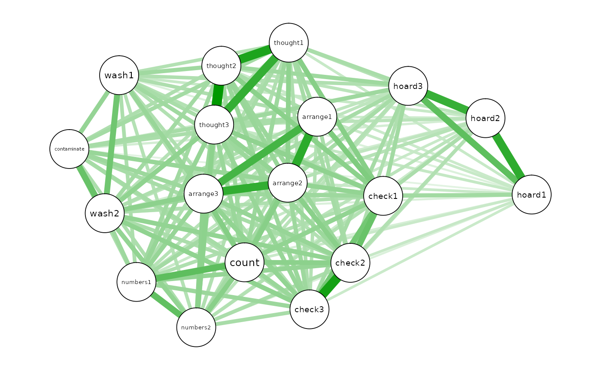
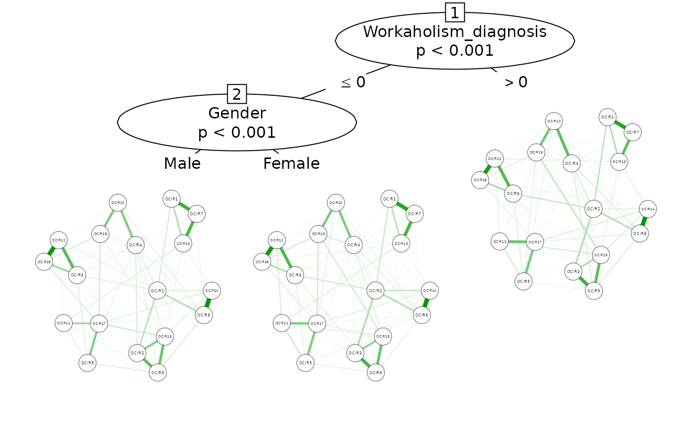
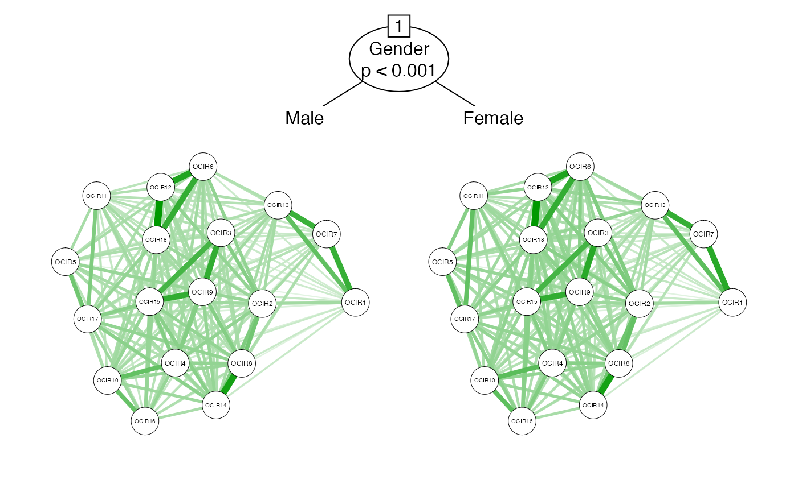
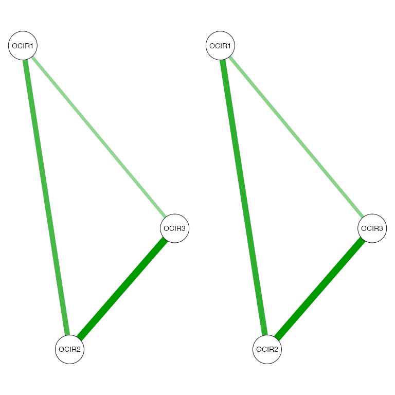
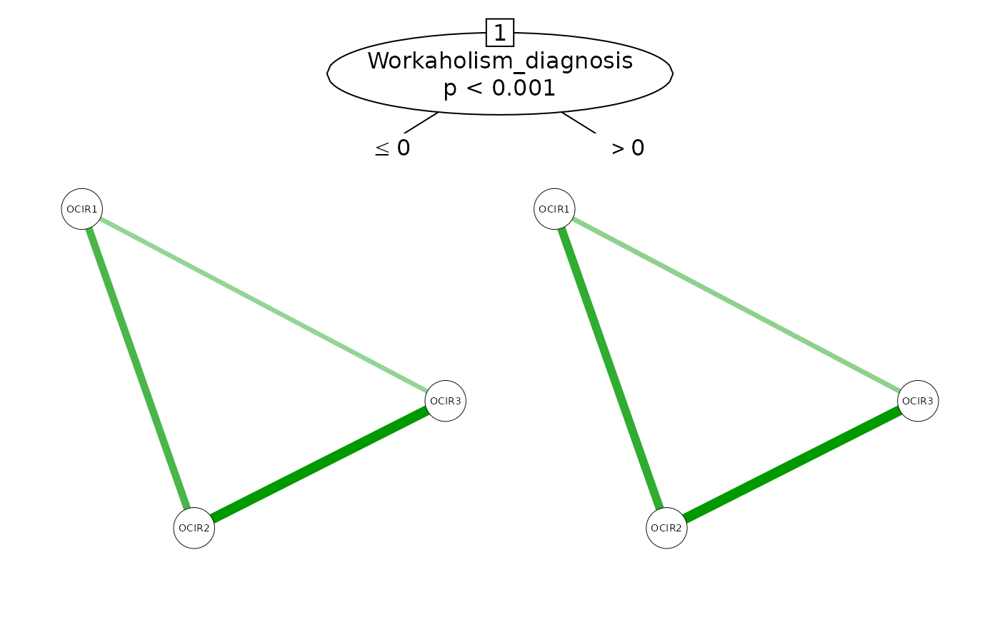
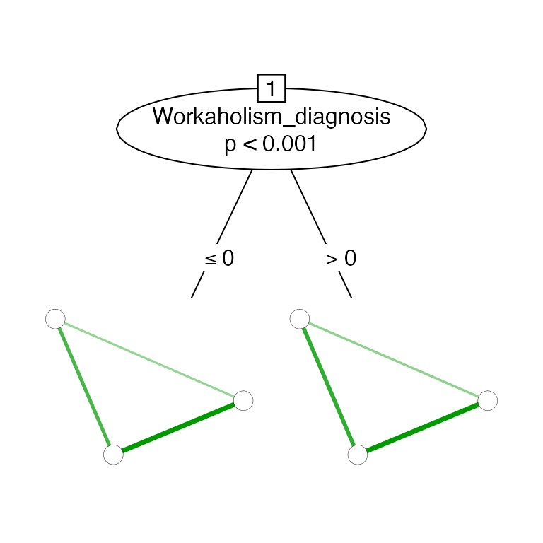
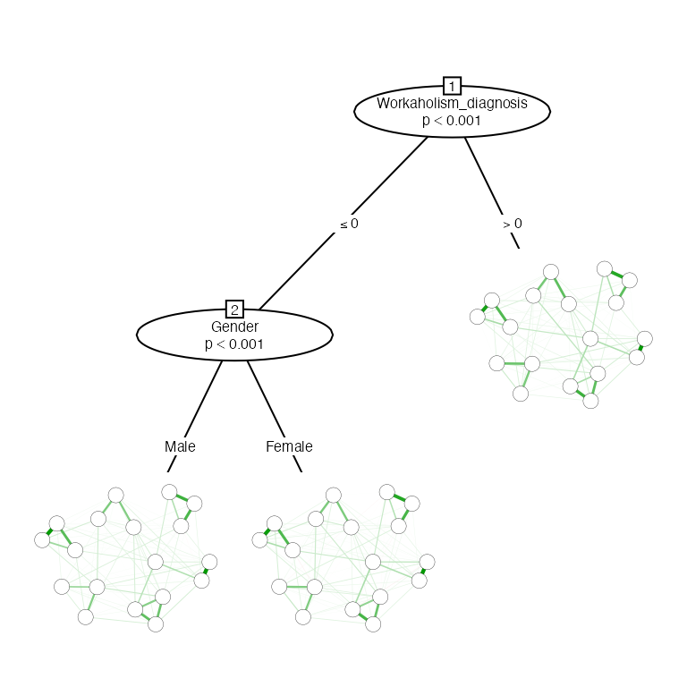
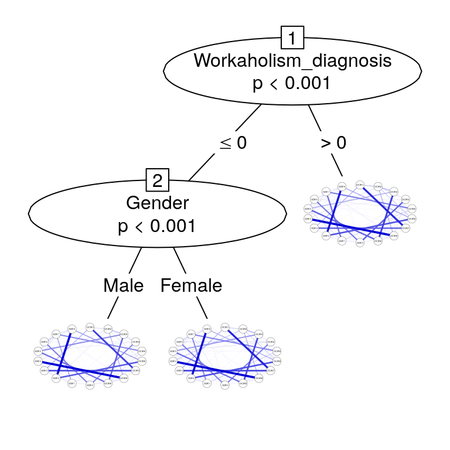

networktree: Recursive partitioning of network models
Payton Jones, Thorsten Simon, Achim Zeileis
last modified: 2020-12-12
Source:vignettes/networktree.Rmd
networktree.RmdOverview
The networktree package allows you to test whether sample characteristics (e.g., gender, age) alter network structures. A variety of sample characteristics can be tested at once, and networktree will automatically identify the most influential splits and partition your sample accordingly.
Each subsequent time your sample is partitioned, you lose statistical power. Thus, if you are hoping to find multiple sources of heterogeneity (multiple splits), it is recommended that you have a large sample size (~800 or greater). For an overview of the statistical power of networktree, please see the associated publication.
Let’s take a look at how to use the package.
Installation
Install networktree from CRAN
install.package("networktree")
or from GitHub
devtools::install_github("paytonjjones/networktree")
Load data
We can try out some examples with the workaholic dataset that is included in the package. It includes items from the Obsessive-Compulsive Inventory - Revised (OCIR) which we can use to form a network (for more info, see ?workaholic).
require(networktree) data(workaholic) OCD_vars <- paste("OCIR", 1:18, sep = "") OCD_names <- c("hoard1","check1","arrange1","count","contaminate", "thought1","hoard2","check2", "arrange2","numbers1","wash1","thought2", "hoard3", "check3", "arrange3", "numbers2", "wash2", "thought3") cor_OCD <- cor(workaholic[,OCD_vars]) q1 <- qgraph::qgraph(cor_OCD, layout = "spring", labels = OCD_names)

Using networktree(): The basics
Now we can try out the networktree() function. For now, let’s just look to see if there is a split by gender. All we have to do is enter the network-related variables in the nodevars argument, and the split variables in the splitvars argument.
cor_gender <- networktree(nodevars = workaholic[,OCD_vars], splitvars = workaholic[, "Gender", drop = FALSE]) plot(cor_gender)

If you want to include more split variables, you can include as many as you want. The algorithm prioritizes the “biggest” splits first and always considers significance level, so you don’t need to worry too much about overfitting. We used a correlation network before, but we can also use other types of estimation by using the transform argument. Here we will set to “glasso” (we could also use “pcor”).
glasso <- networktree(nodevars = workaholic[, OCD_vars], splitvars = workaholic[, c("Gender", "Workaholism_diagnosis")], transform = "glasso") plot(glasso)

The default of networktree() is to use model-based recursive partitioning (?mob). However, it can also use conditional inference trees (?ctree). This can be controlled using the method argument. For more details on the differences between the two approaches, see the associated publication.
cor_gender_ctree <- networktree(nodevars = workaholic[, OCD_vars], splitvars = workaholic[, "Gender", drop = FALSE], method = "ctree") plot(cor_gender_ctree)

Understanding the results: comparetree() and getnetwork()
As you have likely already noticed, interpreting the results can difficult when you have a large network or many splits in your tree. Everything becomes small so quickly! Luckily, there are a couple of tools to help you.
Each part of the tree is given a label. You can most easily see these labels with the print() method for networktree objects.
smalltree <- networktree(nodevars = workaholic[, c("OCIR1", "OCIR2", "OCIR3")], splitvars = workaholic[, c("Gender", "Workaholism_diagnosis")]) print(smalltree)
## Network tree object
##
## Model formula:
## OCIR1 + OCIR2 + OCIR3 ~ Gender + Workaholism_diagnosis
##
## Fitted party:
## [1] root
## | [2] Workaholism_diagnosis <= 0
## | [3] Workaholism_diagnosis > 0
##
## Number of inner nodes: 1
## Number of terminal nodes: 2
## Number of parameters per node: 3
## Objective function: 69250.49Under the ‘Fitted party’ section, you can see that the branches have the IDs [2] and [3]. The root, with ID [1], allows you to access the full data. We can use the IDs of the branches to access them.
You can access the specific partition of the data:
head(smalltree[2]$data)
## OCIR1 OCIR2 OCIR3 Gender Workaholism_diagnosis
## 1 0 0 0 Male 0
## 2 0 0 0 Female 0
## 3 0 1 0 Female 0
## 4 0 0 0 Female 0
## 5 0 1 0 Female 0
## 6 0 0 0 Female 0The getnetwork() function allows you to get the network (adjacency matrix) using the ID.
getnetwork(smalltree, id = 3)
## OCIR1 OCIR2 OCIR3
## OCIR1 0.0000000 0.3225396 0.1787196
## OCIR2 0.3225396 0.0000000 0.3981457
## OCIR3 0.1787196 0.3981457 0.0000000Another common goal is to understand the differences between the networks. This is made easy with the comparetree() function.
First, comparetree provides a list of “highlights”: edges in the network that had large differences between the two partitions. It gives the value of the edge in each partition, as well as the difference between the two edgs.
smalltree_compare <- comparetree(smalltree, id1 = 2, id2 = 3, highlights = 3) smalltree_compare$highlights
## node1 node2 id1 id2 (id1 - id2)
## 1 OCIR1 OCIR2 0.2433007 0.3225396 -0.07923887
## 2 OCIR2 OCIR3 0.3419148 0.3981457 -0.05623092
## 3 OCIR1 OCIR3 0.1436213 0.1787196 -0.03509838Second, it gives you an adjacency matrix that represents the differences for each edge (id1 - id2).
smalltree_compare$matrix
## OCIR1 OCIR2 OCIR3
## OCIR1 0.00000000 -0.07923887 -0.03509838
## OCIR2 -0.07923887 0.00000000 -0.05623092
## OCIR3 -0.03509838 -0.05623092 0.00000000Third, it allows you to easily plot those two networks side by side:
smalltree_compare <- comparetree(smalltree, id1 = 2, id2 = 3, highlights = 3, plot = TRUE)

And fourth, it allows you to plot the adjacency matrix representing the differences (green edges mean the edge was larger in id1, red edges mean the edge was larger in id2):
smalltree_compare <- comparetree(smalltree, id1 = 2, id2 = 3, highlights = 3, plot = TRUE, plot.type = "subtract")

Integration with partykit
networktree uses partykit as a foundation. For those familiar with the partykit package, you may find the nodevars and splitvars arguments unintuitive. If you prefer, you can also use a formula implementation:
smalltree <- networktree(OCIR1 + OCIR2 + OCIR3 ~ Gender + Workaholism_diagnosis, data = workaholic) plot(smalltree)

The integration with partykit also provides other advantages. Additional arguments added to networktree() are passed through to mob_control() (or ctree_control()). This allows for flexibility in fitting the model. For instance, here we will pass two additional arguments to set the alpha to 0.01 and use BIC pruning (although in this case, it doesn’t seem to make a difference!).
add_params <- networktree(OCIR1 + OCIR2 + OCIR3 ~ Gender + Workaholism_diagnosis, data = workaholic, alpha = 0.01, prune = "BIC") plot(add_params)

This also allows us to control the plotting of the tree structure. In the plot() method, a list-style argument named partyargs allows you to pass through arguments to partykit::plot.party().
Here we demonstrate shrinking the tree labels:

Integration with qgraph
networktree uses qgraph to plot the networks. When using the plot() method, any additional arguments are passed through directly to qgraph.
Let’s use qgraph to make the network colorblind-friendly with the nodes laid out in a circle and labeled.
plot(glasso, theme = "colorblind", layout = "circle", labels = OCD_names)

Documentation
For more details on networktree, please refer to the reference manual.